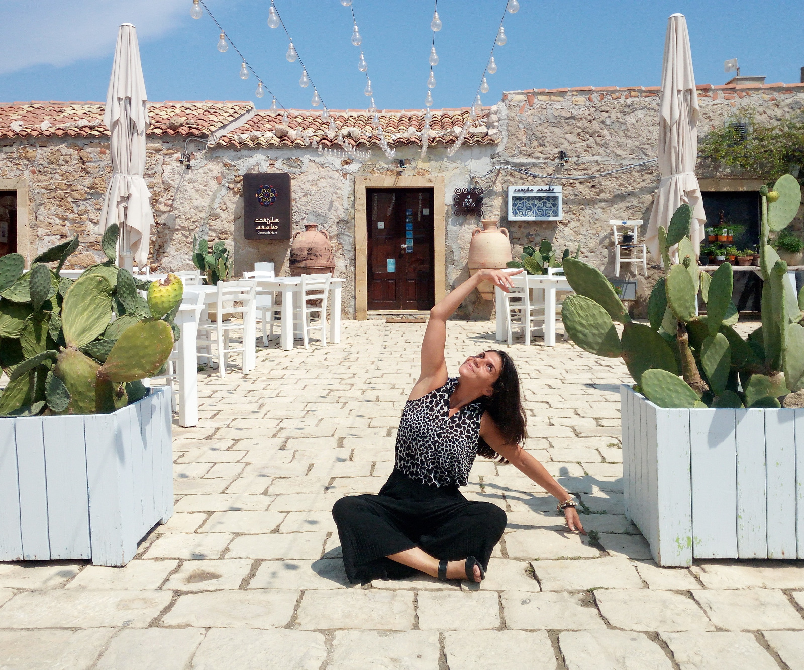
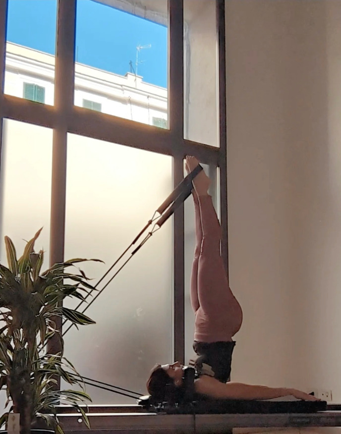

Il mio percorso
Conoscere il corpo per viverlo meglio.

Sono Mary Ceraulo, chinesiologa e professionista del movimento.
Il mio percorso di studi comprende la laurea in Scienze Motorie, Sport e Salute e quella in Scienze e Tecniche dell’Attività Motoria Preventiva e Adattata. Ho approfondito la preparazione fisica nel tennis e ho conseguito diverse qualifiche nell’ambito del Pilates, tra cui Matwork e Reformer, oltre a specializzazioni dedicate alla gravidanza e alla terza età.
La mia passione nasce dalla curiosità di capire come funziona il corpo, come si muove e perché lo fa in un determinato modo.
Nel tempo ho approfondito lo studio dell’anatomia, della fisiologia e della biomeccanica, concentrandomi in particolare sulla colonna vertebrale, sulla postura e sulla propriocezione. Anche l’appoggio del piede e la distribuzione del peso sono aspetti importanti per comprendere come il corpo si organizza durante il movimento.
Mi occupo di stabilità del core e di come questa influenzi il movimento, sia nella vita quotidiana sia durante l’attività sportiva. Approfondisco inoltre problematiche come ernie, scoliosi e disturbi legati al nervo sciatico, con attenzione al ruolo del core, del pavimento pelvico e della Power House.
La respirazione, il metodo Mézières, la decompressione e il lavoro sul muscolo trasverso dell’addome sono altri elementi che integro nel mio approccio, con l’obiettivo di comprendere il corpo nella sua globalità e aiutare ogni persona a muoversi in modo più consapevole.
Movimento e circolazione

Un altro ambito che approfondisco riguarda la salute delle gambe e la circolazione. La mobilità, la fluidità dei movimenti e il drenaggio sono aspetti importanti per affrontare sensazioni di pesantezza e altri disagi che possono influire sul benessere quotidiano.
Anche la mia esperienza personale con una condizione circolatoria mi ha spinta ad approfondire questo tema attraverso seminari, ricerca e sperimentazione pratica.
Mi interesso inoltre alla diastasi addominale, alla respirazione e alla gestione delle pressioni interne, aspetti strettamente collegati alla postura e al movimento. Il Pilates e il lavoro sulla Power House rappresentano strumenti importanti per sviluppare consapevolezza, controllo e coordinazione.
Il mio obiettivo è accompagnare ogni persona in un percorso costruito sulle sue esigenze, rispettando le caratteristiche individuali e promuovendo un rapporto più consapevole con il proprio corpo.
È dall’incontro tra studio, esperienza, osservazione e pratica che nasce il mio modo di allenare.